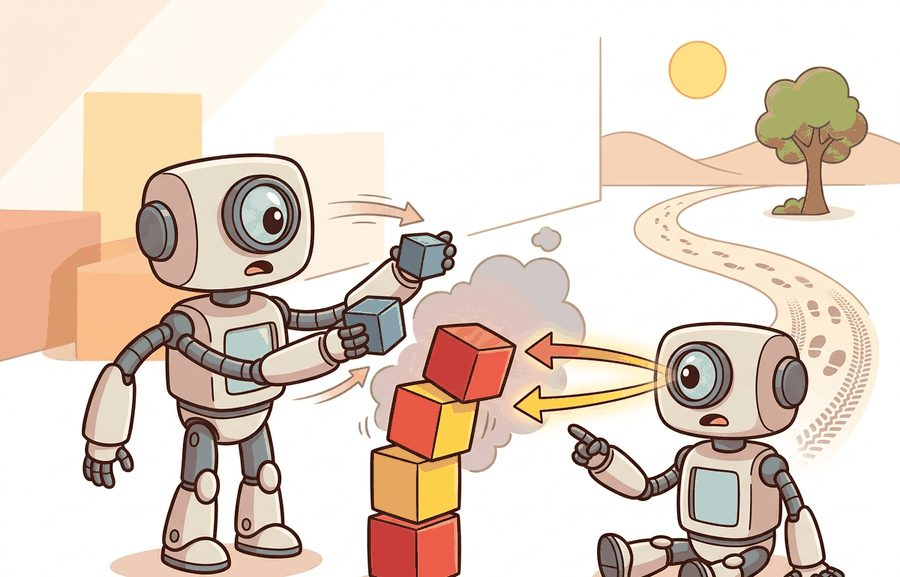
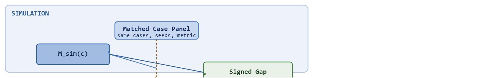

"The reality gap is not a vague concern. It is a number, and it is your number to own."
A Policy That Passed Simulation

This section builds on the fidelity taxonomy introduced in section 9.3. The paired measurement framework developed here is extended in module 13, where domain randomization is used as a principled response to large reality gaps. Module 20 returns to the same gap metric in the context of reinforcement learning (RL)-trained policies, showing how transfer curves guide deployment decisions.
A robot nails 94% success in simulation, then achieves 61% on the real arm the next morning. That 33-point drop is not bad luck: it is a number, and numbers can be traced, diagnosed, and shrunk. As embodied AI moves from research labs into warehouses and hospitals, teams that treat the reality gap as a vague concern keep shipping policies that silently degrade on deployment. Teams that measure it with a matched panel catch the failure before the robot does.
Here you will build a paired measurement framework, learn to sign and decompose the gap by failure type, and leave with a concrete artifact structure that turns "the sim was close enough" into a defensible, reproducible claim.
Decomposition means grouping the signed gaps by diagnostic label (contact, sensing, actuation delay, metric mismatch, other) and comparing the mean and largest residual within each group, rather than reporting one aggregate number: this is what turns "the gap is 0.12" into "the gap is driven by contact mismatch in low-friction cases," the actionable form the rest of this section builds toward.
Picture two robots running the identical policy on the identical task: in simulation the blocks stack flawlessly, while on the bench the real arm fumbles and the tower topples, and the distance between those two outcomes is what we call the sim-to-real gap. Measuring it begins with a matched panel: one case list, one metric, two settings. Figure 9.4A shows exactly that scene in the wild: the same policy and task, one clean outcome in simulation and one toppled stack on hardware. A matched panel means the same task description, initial condition family, observation contract, action limits, controller frequency, success metric, and failure labels in simulation and hardware. Without that matching, the gap is not a quantity. It is a story assembled from different experiments.

The practical question is not whether simulation is "close enough" in general. The question is whether the simulated evidence predicts the real decision that matters: which policy to deploy, which failure mode to fix, which parameter to randomize, or which claim to publish.
The reality gap is meaningful only when the simulated and real numbers are co-computed on the same panel. A simulator score from one setup and a hardware score from another setup cannot support a transfer claim.
Let $M_{\text{sim}}(c)$ be the metric for case $c$ in simulation and $M_{\text{real}}(c)$ be the metric for the matched real case. The signed reality gap is $\Delta(c)=M_{\text{real}}(c)-M_{\text{sim}}(c)$. The sign matters: a negative success gap means simulation overestimated performance, while a positive gap means simulation was pessimistic for that case.
The same notation works for success rate, collision count, final position error, energy use, time to complete, or recovery rate. The rule is construct matching, where the compared numbers must come from one evaluator, one case list, one seed policy, and one metric definition, not from two setups that merely look similar (construct matching means the two numbers measure the same underlying quantity, not just numbers that happen to share a name).
The sign matters for embodied AI. A robot that exceeds its simulated performance budget on hardware can damage components, violate safety margins, or drain the battery past what it supports. A consistently negative gap means simulation overestimates, so the deployment team must plan for worse real outcomes. A positive gap in a safety-critical metric such as collision count signals the opposite danger: simulation hides real risk by being too optimistic about obstacle avoidance.
The sign also reveals mechanism, because it separates systematic bias from random scatter. A residual here is simply the per-case gap $\Delta(c)$ once it is being examined for pattern rather than sign: "large residual" means a case where $|\Delta(c)|$ is far from zero. If $\Delta(c)$ is negative across nearly every case, the simulator has a structural blind spot that tilts the whole distribution, such as underestimated friction or ignored sensor latency. If the sign is mixed and the magnitude varies by case type, the dominant source is interaction-specific. The residuals then cluster by contact regime or scene geometry rather than averaging away. This distinction carries practical weight. In practice, teams that chase a uniformly negative gap with domain randomization alone often report needing on the order of tens of thousands of randomized episodes to cover the missing physics, while teams that first identify the structural source, say a friction coefficient set 30% too high, and fix it in the simulator typically converge with a few hundred targeted real trials; these figures vary by task and are illustrative rather than universal constants.
So far: the signed gap $\Delta(c) = M_{\text{real}}(c) - M_{\text{sim}}(c)$ is defined per case, its sign tells you whether simulation over- or under-estimates real performance, and whether that sign is consistently negative (a structural simulator blind spot) or mixed by case type (an interaction-specific cause) determines whether the fix is broad domain randomization or a single targeted calibration.
The measurement mechanism is case pairing. Every row should contain the simulator result, the real result, the configuration hash, the seed or initial-condition identifier, the replay pointer, and the failure label. Missing fields turn the gap from evidence into anecdote.
The algorithm below reuses the notation just introduced: $M_{\text{sim}}$ and $M_{\text{real}}$ are the paired metric values, and $\Delta$ is their signed difference. The new symbol $\theta_{\mathcal{H}}$ (the hardware calibration snapshot, a frozen record of mass, friction, and sensor bias at measurement time) is what lets the hardware run in step 4 be reproduced later.
Input: policy $\pi$, case panel $C = \{c_1, \dots, c_n\}$, metric $M$, simulator $\mathcal{S}$, hardware platform $\mathcal{H}$, calibration snapshot $\theta_{\mathcal{H}}$
Output: signed gap vector $\Delta \in \mathbb{R}^n$, residual ranking, diagnostic label for each case
Code Fragment 9.4.1 computes a paired gap table for three tabletop cases. The example keeps the panel small so the reader can see which case caused the transfer concern.
# Compute signed sim-real gaps on matched task cases.
# Negative success gaps show where simulation overestimated transfer.
paired_runs = [
{"case": "nominal_grasp", "sim_success": 0.92, "real_success": 0.86, "sim_contact_errors": 2, "real_contact_errors": 5},
{"case": "low_friction", "sim_success": 0.88, "real_success": 0.61, "sim_contact_errors": 4, "real_contact_errors": 13},
{"case": "camera_glare", "sim_success": 0.74, "real_success": 0.70, "sim_contact_errors": 6, "real_contact_errors": 7},
]
for row in paired_runs:
success_gap = row["real_success"] - row["sim_success"]
contact_gap = row["real_contact_errors"] - row["sim_contact_errors"]
print(f"{row['case']}: success gap {success_gap:+.2f}, extra contact errors {contact_gap}")nominal_grasp: success gap -0.06, extra contact errors 3 low_friction: success gap -0.27, extra contact errors 9 camera_glare: success gap -0.04, extra contact errors 1
Trace the algorithm with the three cases from Code Fragment 9.4.1, panel size n = 3.
Step 5 (signed gaps): nominal_grasp Delta = 0.86 - 0.92 = -0.06; low_friction Delta = 0.61 - 0.88 = -0.27; camera_glare Delta = 0.70 - 0.74 = -0.04.
Step 6 (sort by |Delta|, descending): low_friction (0.27), nominal_grasp (0.06), camera_glare (0.04).
Step 7 (label top residual): low_friction also jumps from 4 to 13 contact errors, so it gets the label "contact".
Step 8 (summary stats): mean signed gap = (-0.06 - 0.27 - 0.04) / 3 = -0.123; with values centered on -0.123 the standard deviation sigma is about 0.103.
Step 9 (flag outliers, alpha = 2): the threshold is 2 x 0.103 = 0.206. Only low_friction has |Delta| = 0.27 > 0.206, so it is the single priority calibration target. The other two cases fall below the bar and are left alone. One number, one decision: fix friction first.
The manual table is for understanding. In a practical system, MuJoCo, Isaac Lab, ManiSkill, robosuite, ROS 2 bags, and experiment trackers should write paired sim-real rows automatically, including seeds, assets, controller settings, videos, and failure labels. The shortcut removes bookkeeping friction so engineering attention stays on why the gap exists.
For The reality gap as a measurable quantity, a simulator run becomes evidence only after the falsifiable hypothesis, held-out seeds, perturbation panel, and untested real-world assumption are written down.
A reality-gap number is invalid if simulation and hardware use different object sets, reset rules, controller limits, camera calibration, or success metrics. The audit question is simple: can every compared number be traced to the same case definition?
A small reality gap does not mean the simulator is accurate: it can mean both simulation and hardware fail on the same hard cases, so the gap is near zero by coincidence. This happens when a policy is too conservative and avoids the contact-rich regime entirely, producing low success in both settings. The diagnostic check is to inspect failure labels, not just the gap magnitude. If failures cluster at the same cases in both columns and the policy avoids anything difficult, the small gap is a warning, not a certificate of transfer.
Think of the gap distribution like a restaurant health inspection that scores each dish separately. A kitchen averaging 90 out of 100 across twenty dishes looks safe, but if one dish scores 30 because of a spoiled ingredient, that single outlier is the food-safety risk, not the average. The mean hides the dangerous case entirely. In the same way, a near-zero mean reality gap can mask a catastrophic failure on the handful of contact-rich scenarios that matter most: you must look at the worst-scoring cases, not the headline average.
A common mistake is to treat a single aggregate number, such as mean signed gap or aggregate success-rate difference, as a complete picture of transfer risk. It is not. A policy can post a near-zero mean gap while hiding catastrophic failure on a small subset of contact-rich or safety-critical cases. Treat the reality gap as a distribution over the case panel. The mean and standard deviation describe center and spread. Deployment decisions must be driven by the largest-residual cases and their diagnostic labels, not by the aggregate alone.
A grasping team might see 91 percent simulated success and 68 percent real success. The useful artifact is not that headline gap alone. It is the case table showing that failures concentrate on low-friction packaging, which points toward friction calibration or a domain-randomization panel rather than a new policy architecture.
Warehouse-automation teams such as Amazon Robotics reportedly treat sim-to-real transfer for bin-picking arms as a measured quantity: policies trained in simulation are scored on a frozen panel of real package types, and the per-case success gap is used to decide which SKUs get extra real-world data or tighter grasp-model calibration. Published and anecdotal accounts suggest the largest residuals typically concentrate on deformable and low-friction packaging, the regime a matched panel is designed to surface before a policy reaches a live fulfillment center.
The reality gap is the simulator's receipt. If the receipt does not list the same items as the hardware run, do not use it for accounting.
Direction 1: Differentiable simulation for online gap closure. Rather than treating the simulator as a fixed black box, 2024-2026 work makes physics parameters differentiable so that real-robot rollouts directly update the simulator's contact and friction model. Early work in this direction, including pipelines demonstrated on Franka-arm manipulation tasks, reports closing double-digit success-gap points with on the order of 100 real trials, an order of magnitude fewer than months of manual calibration typically required; readers should treat specific trial counts as indicative of the approach's promise rather than as a settled benchmark, since results vary by task and by the differentiable-simulation implementation used.
Direction 2: Foundation-model world models as gap estimators. Large video-prediction models pre-trained on diverse robot datasets (notably UniSim, Yang et al., NeurIPS 2023; and subsequent 2024 extensions from Google DeepMind's robotics team) are being used to predict the real-world outcome of simulated trajectories, providing a learned prior over the gap distribution before any hardware trial is run. The gap estimator flags high-risk cases in the panel without touching the physical robot.
Direction 3: Contact-rich sim-to-real via tactile simulation. The 2024-2025 push from MIT and CMU robotics groups (e.g., Agrawal et al., RSS 2024, on tactile sim-to-real for in-hand manipulation) adds simulated tactile sensors (GelSight and DIGIT are camera-based touch sensors that image deformation of a soft gel pad to estimate contact force and shape) to the paired measurement framework, attributing contact residuals that RGB-D-only pipelines cannot separate from actuation noise.
Open problem for a PhD student: All three directions require some real hardware trials to close or estimate the gap, but no principled method yet exists for deciding which cases in the panel to run on hardware first, given a fixed trial budget, so that each trial maximally reduces the expected worst-case residual across the full panel. An information-theoretic or Bayesian active-learning formulation of hardware trial scheduling, validated against the diagnostic-label taxonomy from section 9.4, is an open and tractable dissertation topic.
Can you name the matched case panel, the metric, the real calibration data, and the largest expected residual for one policy? If not, the reality gap is not yet measurable.
Knowing the largest residual and its label, as the self check demands, only pays off when that knowledge is anchored to a stable interface the gap is measured against. The reality gap becomes useful when it is tied to a closed-loop contract. The contract names the observation stream, state estimate, action representation, controller timing, metric, calibration snapshot, and replay artifact. Without that contract, a transfer claim can hide behind aggregate success while failing on the exact cases hardware exposes.
A policy that works in simulation but collapses on hardware is not a policy: it is a hypothesis that never met its test.
The graduate-level habit is to separate three claims. The simulator-validity claim says which real quantities the simulator matches. The policy claim says what behavior improved. The transfer claim says how much real performance follows from simulated evidence. Keeping those claims separate prevents a strong simulator benchmark from pretending to be a hardware result.
| Tool or Library | Role in the Topic | Builder Advice |
|---|---|---|
| MuJoCo or Isaac Lab | Paired simulated rollouts | Use when dynamics, contacts, and controller timing are part of the transfer claim. |
| ROS 2 bags | Real replay artifacts | Use when hardware observations, commands, and timing traces must be inspected after the run. |
| Gymnasium wrappers | Metric and seed consistency | Use when the same reset, step, and evaluation interface should wrap several simulator variants. |
| Experiment tracker | Artifact lineage | Use when every gap number must point back to configs, videos, checkpoints, and calibration files. |
A robust implementation starts with one paired record, then scales to many seeds. Log identical fields for simulation and hardware: case id, policy id, metric value, failure label, and replay pointer. Preserve that schema across library versions so every comparison stays a same-panel measurement.
# Build one paired evidence record for a reality-gap audit.
# The same schema should hold simulator and hardware measurements.
from dataclasses import dataclass, asdict
@dataclass
class GapRecord:
case_id: str
sim_metric: float
real_metric: float
failure_label: str
replay_uri: str
def as_row(self) -> dict[str, object]:
return asdict(self)
record = GapRecord(
case_id="low_friction_box_seed_014",
sim_metric=0.88,
real_metric=0.61,
failure_label="contact mismatch",
replay_uri="artifacts/9.4/low_friction_box_seed_014",
)
print(record.as_row()){'case_id': 'low_friction_box_seed_014', 'sim_metric': 0.88, 'real_metric': 0.61, 'failure_label': 'contact mismatch', 'replay_uri': 'artifacts/9.4/low_friction_box_seed_014'}GapRecord dataclass defines the reusable paired-evidence schema (case_id, sim_metric, real_metric, failure_label, replay_uri) and prints one populated row for the low_friction_box_seed_014 case, making the gap auditable instead of merely descriptive.Expected output: the record preserves the case identity, simulator metric, real metric, failure label, and replay path in one artifact. A reviewer can recompute the gap and inspect the underlying trace without guessing which run produced the number.
Once the paired record schema is in place and every gap is auditable, the next move is to act on the residuals it surfaces rather than condemning the simulator wholesale. When a large reality gap appears, avoid labeling the whole simulator as weak. First assign the residual to contact modeling, sensing, actuation delay, controller limits, perception, task semantics, or metric mismatch. Then rerun one controlled perturbation that isolates the suspected cause. This turns a failed transfer result into a reusable diagnostic asset.
The reality gap is useful when it turns transfer into a same-panel measurement with auditable residuals.
Beginner (weekend): Reality-gap logger for a Gymnasium cart-pole task. Wrap the Gymnasium CartPole-v1 environment and a PyBullet version of the same task so both write a shared GapRecord CSV after each episode; the key challenge is aligning the observation contracts so the same success metric is computed identically in both simulators. Intermediate (1-2 weeks): Friction residual diagnosis on a MuJoCo tabletop grasp. Train a simple pick-and-place policy in MuJoCo, replay the same policy on a ROS2-controlled robot arm while logging ROS2 bag files for both runs, then build a paired panel that decomposes the success gap by contact regime; the key challenge is writing an automatic failure labeler that maps each dropped-object event to a contact-mismatch or sensor-latency diagnostic using the Isaac Lab contact sensor API alongside the real bag replay.
Goal: turn the sim-to-real gap into a number you computed yourself, using two simulators as a stand-in for sim and "real" so no hardware is needed (15-30 minutes).
Tools needed: Python with gymnasium and pybullet (pip install gymnasium pybullet), plus a simple scripted or pretrained CartPole policy.
Steps: Freeze a panel of 10 fixed initial states (seeds 0-9). Run the same policy on Gymnasium CartPole-v1 (treat as "sim") and on PyBullet's CartPoleBulletEnv (treat as "real"), recording the same success metric (episode length over the 200-step cap) for each seed into a shared GapRecord table.
What to vary: introduce a deliberate mismatch by changing pole mass or applied-force magnitude in only the PyBullet env, then re-run the panel. Try a small (5 percent) and a large (40 percent) mismatch.
What to observe: the signed per-seed gap Delta = real - sim, its mean and standard deviation, and which seeds become the largest residuals as mismatch grows. Confirm that the mean gap can stay near zero while individual seeds blow up, the central warning of this section.
For a door-opening task, define three matched sim-real cases, one success metric, one failure label taxonomy, and the artifact fields required to recompute the reality gap.
Section 9.5 surveys benchmark environments and explains how to choose one whose task construct matches the reality-gap measurement you need.
This work shows how randomized dynamics can train policies that tolerate physical mismatch. It is a useful bridge from this chapter into later transfer and domain randomization chapters. Readers should connect this source to the reality gap as a measurable quantity when deciding what is reusable, what is benchmark-specific, and what must be remeasured.
Brockman, G. et al. (2016). "OpenAI Gym." arXiv.
The Gym paper explains the environment API that shaped modern reinforcement-learning experimentation. Readers should use it to understand why reset, step, render, and reward contracts became standard research infrastructure. Readers should connect this source to the reality gap as a measurable quantity when deciding what is reusable, what is benchmark-specific, and what must be remeasured.
This paper anchors the simulator design lineage behind much modern robot learning. It is useful here because it explains why fast, controllable simulation became central to model-based control and policy testing. Readers should connect this source to the reality gap as a measurable quantity when deciding what is reusable, what is benchmark-specific, and what must be remeasured.
Farama Foundation. "Gymnasium Documentation."
Gymnasium is the maintained successor interface for single-agent reinforcement-learning environments. It matters in this chapter because simulation evidence depends on reproducible environment boundaries and seed handling. Readers should connect this source to the reality gap as a measurable quantity when deciding what is reusable, what is benchmark-specific, and what must be remeasured.
NVIDIA. "Isaac Lab Documentation."
Isaac Lab documents a modern robot-learning workflow on top of Isaac Sim. Practitioners should read it when simulation must include vectorized tasks, assets, sensors, and learning-library integration. Readers should connect this source to the reality gap as a measurable quantity when deciding what is reusable, what is benchmark-specific, and what must be remeasured.